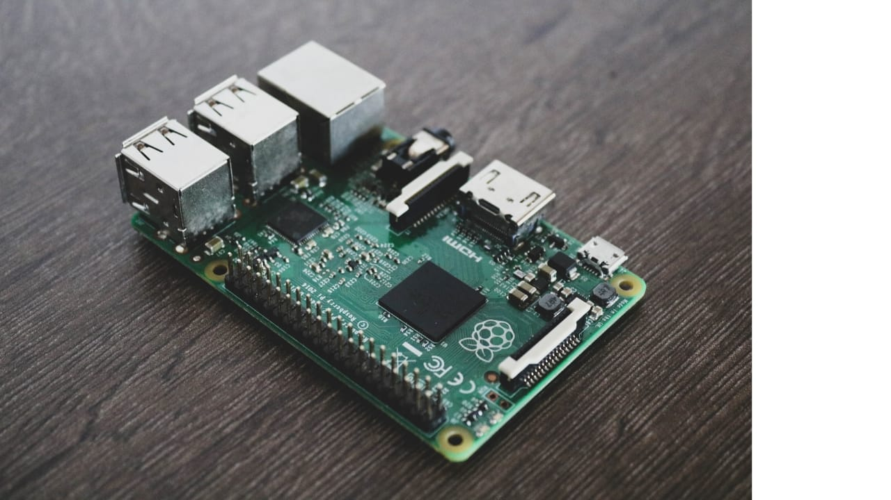

Microprocessor
WHAT IS MICROPROCESSOR ?
• Microprocessor is semiconductor multipurpose , programmable logic device that reads binary instruction from storage device that is memory .
• It accept the binary data as a input and process that data according to the instruction and provide output.
• Microprocessor are capable of performing various computing function and making decision change the sequenceof program execution.
• Microprocessor can also view as integrated circuit , that contains processing capabilities of large computer .
FUNCTION OF MICROPROCESSOR
• To fetch decode and execute instructions
• To transfer data from one block to another block
• To provide control and timing signals to the whole system
• It gives proper response to different external interruptionon.
FIRST GENERATION
✓Intel’s 4004 was the first microprocessor available in the market .
✓It was a four bit pmos microprocessor in 1971 designed to be used in calculation .
✓In1972 intel introduced first general purpose 8 bit microprocessor intel 8008.
SECOND GENERATION
✓ In 1974 , Intel 8080,zilogs Z-80 , Motorola’s M6800 were introduced . All these were 8-bit microprocessor.
✓ During second generation ,the development of microprocessor has been in a direction to complete microprocessor system i.e. CPU, ROM ,RAM .
✓ In 1976 INTEL’s 8085 8 bit microprocessor was introduced.
THIRD GENERATION
✓ INTEL introduced first 16-bit microprocessor 8086 in 1978.
✓It was followed by Zilog’s Z-8000 in 1979 and motororla’s 68000 in 1980.
✓In this generation memory space was 64 KB .
✓The other features were full arithmetic execution and efficient higher level language addressing .
FOURTH GENERATION
✓In 1981 , intel introduce first 32 bit microprocessor 80386 .
✓It can address physical memory of 4GB .
✓Other 32bit microprocessor HP-32 announced in 1982.
FIFTH GENERATION
✓ Intel made improvement in microprocessor design to provide greatest speed.
✓ Also system can run on new OS like UNIX , LINUX etc.
✓ The processor in this generatioin is called Pentium .
✓ It is 64-bit microprocessor .
concept of ADDRESS BUS , DATA BUS , CONTROL BUS.
ADDRESS BUS
• The address bus is a group of 16 lines generally identified as a A0 to A15 .
• It is unidirectional bus .
• The bit flows in one direction i.e. from microprocessor unit to peripheral devices
• The MPU uses the address bus to identify memory locations.
DATA BUS
• The data bus is a group of 8 lines used for data flow .
• This lines are bidirectional .
• Data is flow in both the direction between MPU and memory and the peripheral devices
• Microprocessor unit uses data bus for transferring data.
CONTROL BUS
• Control bus provide necessary timing and control signals to all operation in microprocessor .
• It control the flow of data between microprocessor memory and peripheral devices .
• The control signals are RD , WR.
what is the interrupt
An interrupt is a subroutine called , initiated by external devices through hardware , or microprocessor itself.
• An interrupt can also be view as signal which suspend normal sequence of microprocessor and then microprocessor gives services to that device which has given the signal after completing the services microprocessor again returns to the main program.
• Microprocessor is connected to different peripheral devices . To communicate with these devices microprocessor 8085 uses interrupt method.
• An interrupt is an input signal which transfer control to specific routine known as interrupt service routine ISR .
• After executing ISR control again transfer to the main program .
TYPES OF INTERRUPT
Microprocessor 8085 has two type of interrupt :
1) Software interrupt : it has higher priority
2) Hardware interrupt : it has low priority than software
Software interrupt are not requested by external devces.
HARDWARE INTERRUPTHARDWARE INTERRUPT
• HARDWARE INTERRUPT is also called as vectored interrupt it means that when these interrupt are given it is directed or vectored to transfer the control to specific memory location given by interrupt .
• TRAP has highest priority and INTR has lowest priority among the hardware interrupt .
• These interrupt are requested by external devices.
• They have lower priority than software interrupt.
• After execution of these interrupt program counter is not incremented.
• It improves the throughput of system.
SOFTWARE INTERRUPT
• The normal operation of microprocessor can be interrupted by special instruction such interrupt called as software interrupt.
• 8085 provides 8 user defined software interrupts RST 0 to RST 7 where RST means restart .
• These interrupts are vectored interrupts and when these interrupt are called the control is transfer to the main memory location .
• These interrupt are not requested by external devices but by microprocessor itself.
• After execution of these interrupt program counter is incremented.
• It has more priority than hardware interrupt.

ORGANIZATION AND WORKING OF ALU
• ALU performs the operation such as ADD , SHIFT /ROTATE, COMPARE , INCREMENT AND DECREMENT , AND , OR , XOR.
• Adder perform arithmetic operation like addition subtractioon increment decrement .
• Shifter perform logical operation like rotate left rotate right result is again placed in to accumulator.
• Status register contain group of individual flip flop that can be set as per ALU operation .
• The temporary and accumulator register are consider to be part of ALU.
WORKING & ORGANIZATION OF ALU
• Arithmatic and logic unit is a 8 bit unit .
• It consists of binary adder to perfrom addition and substrsction by using 2’s complement method .
• Temporary register are used to hold the data during arithmetic and logic operation .
• Flag are set according to the result of operation in status register .
IMPORTANT DEFINITIONS
a)Insruction cycle
b)Machine cycle
c) T-state
d)FETCH cycle
• Instruction cycle :
• an instruction cycle is define as the time required to complete the execution of an instruction.
• The 8085 instruction cycle consists of one to five machine cycle.
Machine cycle :
• Machine cycle is define as the time required to complete any operation of accessing either memory or i/o which is subpart of instruction .
• In 8085 the machine cycle may consists of 3 to 6 cycle.
T-state :
• The subdivision of an operation , which is perform in one clock period is called as t-state .
FETCH cycle :
• To load an instruction or piece of data from memory into CPU’s register .
• All instruction must be fetch before they can be executed .
• The time takes to fetch an item is known as a fetch time or fetch cycle .
• An it is measure in clock ticks.
WHAT IS FLAGS ?
• A flag is a single bit status register (flip flop).
• Flags are set or reset by ALU according to result of ALU.
• Flags are important because they are set the conditions for the conditional statement .
• S-sign flag , Z – zero flag , Ac – Auxilliary carry flag , P – parity flags , Cy – carry flag.
DIFFERENT TYPES OF FLAGS
• Sign flag : after the execution of arithmetic and logic operation . If the most significant bit is 1 then sign bit set to be 1 otherwise 0 . If MSB is 1 then number will be negative otherwise positive .
• Zero flag : after performing or logic operation if result is 0 the it set to be a 0 otherwise 1.
• Auxilliary carry flag : in arithmetic operation if carry is generated it will be stored in the auxiliary carry flag . This flag is available only internally not available for programmer.
TYPES OF FLAGS
• Parity flag : parity flag is set to be 1 if result stored in accumulator contain even number i.e. even number of 1’s . If odd number of 1’s then it set to be 0.
• Carry flag : this flag is set if carry produced by most significant bit during the arithmetic operation. In substraction carry flag serve as barrow flag .
lectures link:
keep study with us .